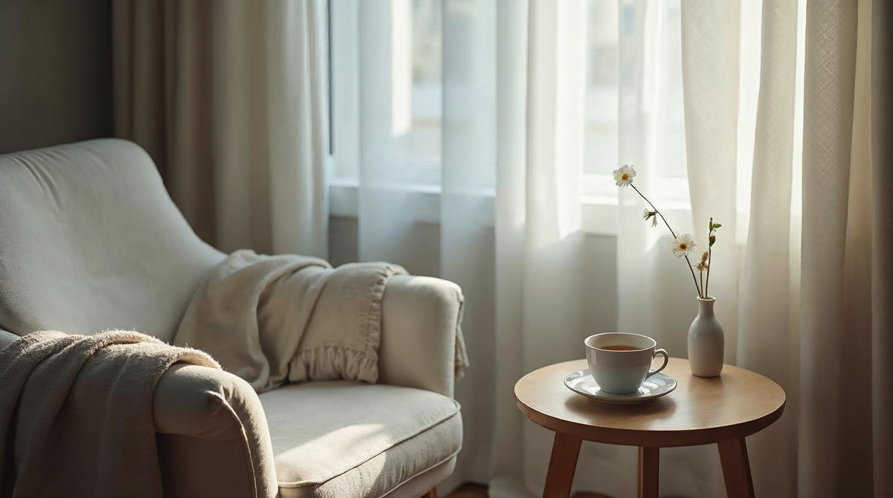
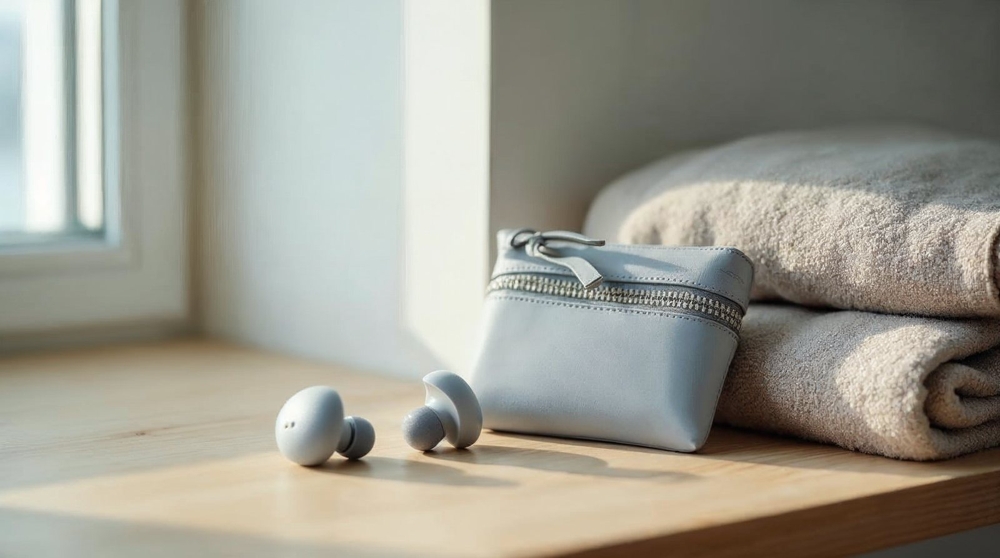
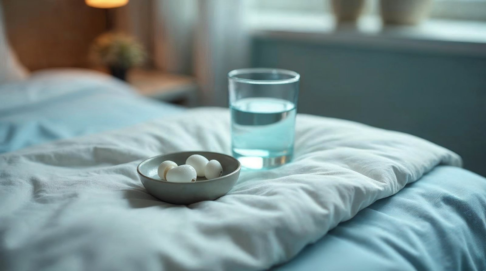

이종호 한의사 감수좋은꿈참사랑한의원 대표원장 (한의사 면허번호 19769)발행 2026-11-24 · 수정 2026-11-26
이 글의 차례
- 왜 이런 불편이 생길 수 있나요
- 왜 출퇴근길 소음이 귀에 부담이 될까요
- 비슷해 보여도 살필 점이 조금씩 다릅니다
- 먼저 이렇게 여쭙니다
- 상황별 예시
- 스스로 점검해 보세요
- 일상에서 먼저 해 볼 수 있는 것
- 볼륨과 듣는 시간은 이렇게 정해 보세요
- 이어폰을 고를 때도 살펴보세요
- 잠자리에서 귀울림이 신경 쓰일 때
- 지하철 안에서 귀를 덜 지치게 하는 방법
- 하루의 소리를 한번 세어 보세요
- 감기에 걸렸을 때는 귀도 조심해 주세요
- 피로와 긴장도 함께 살펴보세요
- 귀울림을 기록하는 방법
- 귀울림에 마음이 쓰일 때
- 한의원에서 함께 살필 수 있는 경우
- 얼마나 지켜보고 언제 상담할까요
- 이렇게 기록해 오시면 상담이 쉬워집니다
- 이런 증상은 먼저 확인이 필요합니다
시끄러운 지하철에서 이어폰 볼륨을 올려 듣고 난 뒤 귀가 먹먹하고 삐 소리가 난다면, 볼륨과 듣는 시간을 줄여 귀를 쉬게 하는 것이 먼저입니다.
출퇴근길 지하철은 생각보다 시끄럽습니다. 열차가 굴을 지나거나 곡선 구간을 돌 때는 바퀴와 선로가 내는 소리가 크게 울리고, 그 소리를 이기려고 우리는 자기도 모르게 이어폰 볼륨을 한두 칸씩 올리게 됩니다. 하루 왕복 한두 시간씩 이런 날이 쌓이면 귀도 지칠 수 있습니다.
왜 이런 불편이 생길 수 있나요
- 주변 소음을 이기려 볼륨을 올리면 귀 안쪽에 큰 소리가 오래 전달됩니다.
- 큰 소리에 오래 노출되면 일시적으로 귀가 먹먹하거나 귀울림이 생길 수 있습니다.
- 피로와 스트레스, 부족한 잠은 귀울림을 더 크게 느끼게 합니다.
왜 출퇴근길 소음이 귀에 부담이 될까요
귀 안쪽에는 소리를 받아들이는 아주 가는 털 모양의 세포들이 있습니다. 큰 소리가 오래 들어오면 이 세포들이 지쳐서 한동안 귀가 먹먹하고, 소리가 없는데도 소리가 나는 것처럼 느껴질 수 있습니다.
대개 조용한 곳에서 쉬면 몇 시간에서 하루 사이에 가라앉지만, 매일 같은 소음에 다시 노출되면 귀가 회복할 시간이 모자랄 수 있습니다. 그래서 출퇴근처럼 날마다 되풀이되는 소음은 한 번의 큰 소리보다 조용히 쌓이는 부담이 되기 쉽습니다.
여기에 잠이 부족하거나 긴장이 이어지면 몸이 작은 소리에도 예민해져, 귀울림이 더 또렷하게 들리고 신경이 쓰이게 됩니다. 귀의 문제와 몸의 피로가 서로를 키우는 셈입니다.
비슷해 보여도 살필 점이 조금씩 다릅니다
- 지하철에서 내린 직후 먹먹하고 삐 소리가 나다가 몇 시간 뒤 가라앉는 경우에는 이어폰 볼륨과 듣는 시간을 먼저 봅니다.
- 조용한 밤에만 소리가 또렷해지는 경우에는 잠드는 습관과 하루의 긴장, 피로의 흐름을 함께 여쭙니다.
- 감기를 앓은 뒤나 비행기를 탄 뒤부터 귀가 꽉 찬 느낌이 이어지는 경우에는 이비인후과에서 귀 안쪽 상태를 먼저 확인하시도록 안내합니다.
- 고개를 돌리거나 턱을 움직일 때 소리가 달라지는 경우에는 목과 턱 주변의 긴장도 함께 살핍니다.
- 이어폰을 쓰지 않는 날에도 귀울림이 계속 이어지는 경우에는 청력 검사를 받으셨는지 여쭙고 그 결과를 함께 봅니다.

먼저 이렇게 여쭙니다
- 출퇴근 중 이어폰을 하루 몇 시간, 어느 정도 볼륨으로 쓰시나요?
- 소리가 한쪽 귀에서 나나요, 양쪽 귀에서 나나요?
- 조용할 때, 피곤할 때, 잠들기 전 중 언제 더 잘 들리나요?
- 어지럼이나 귀 통증, 귀가 꽉 찬 느낌이 함께 있나요?
- 최근 감기나 귀 질환을 앓은 적이 있나요?
- 출퇴근 말고도 일이나 운동 중에 이어폰을 쓰시나요?
- 귀울림이 시작된 지 얼마나 되었나요?
- 잠들 때 이어폰을 끼고 주무시나요?
상황별 예시
- 예를 들어 왕복 두 시간 가까이 지하철로 출퇴근하며 그동안 내내 영상을 보는 경우, 대사를 알아듣기 위해 볼륨을 점점 올리게 되어 저녁이면 귀가 먹먹해지기 쉽습니다. 출퇴근 중 절반은 이어폰을 빼고 쉬거나, 자막을 켜고 볼륨을 낮춰 보세요.
- 예를 들어 출퇴근길에 이어폰을 쓰고 사무실에서도 화상 회의로 헤드셋을 오래 끼는 경우, 하루 대부분을 귀에 소리를 대고 지내게 됩니다. 회의가 없는 시간에는 헤드셋을 벗고, 점심시간에는 이어폰 없이 조용히 쉬는 시간을 만들어 보세요.
- 예를 들어 퇴근 뒤 헬스장에서도 큰 음악을 들으며 운동하는 경우, 지하철 소음에 운동 중 소음까지 더해져 밤에 귀울림이 더 또렷해질 수 있습니다. 운동 중에는 볼륨을 낮추거나 한쪽 귀만 쓰는 방법도 생각해 보세요.
- 예를 들어 야근이 이어져 잠이 부족한 주에만 귀울림이 심해지는 경우, 소음보다 피로와 긴장이 더 크게 작용하고 있을 수 있습니다. 그 주의 잠든 시각과 귀울림의 크기를 함께 적어 보시길 권합니다.
스스로 점검해 보세요
- 지하철에서 옆 사람에게 내 이어폰 소리가 들릴 정도로 볼륨을 올린다
- 출퇴근 내내 이어폰을 한 번도 빼지 않는다
- 하루에 이어폰이나 헤드셋을 쓰는 시간이 네 시간을 넘는다
- 이어폰을 빼고 나면 주변 소리가 한동안 작게 들린다
- 귀울림이 피곤한 날이나 잠이 부족한 날 더 크다
- 조용한 방에 누우면 귀울림 때문에 잠들기 어렵다
- 이비인후과 청력 검사를 받아 본 적이 없다
- 감기로 코가 막힌 날에도 평소처럼 이어폰을 쓴다
- 잠들 때까지 이어폰을 끼고 영상을 본다
해당하는 항목이 많다면 볼륨과 듣는 시간, 귀를 쉬게 하는 시간부터 바꿔 볼 신호입니다.

일상에서 먼저 해 볼 수 있는 것
- 이동 중에는 볼륨을 주변 소리가 조금 들릴 정도로 낮추기
- 소음 줄임 기능이 있다면 볼륨을 높이는 대신 그 기능 활용하기
- 출퇴근 중 일부 구간은 이어폰을 빼고 귀 쉬게 하기
- 잠들기 전 아주 작은 소리로 잔잔한 소리를 틀어 두기
- 피곤한 날은 이어폰 없이 쉬는 시간을 더 만들기
볼륨과 듣는 시간은 이렇게 정해 보세요
휴대폰의 최대 볼륨을 기준으로 절반이 넘지 않게 듣는 것을 흔히 권합니다. 많은 휴대폰에 볼륨 제한이나 듣기 시간 알림 기능이 있으니 설정에서 한번 찾아 켜 두세요.
한 시간 정도 들었다면 10분쯤은 이어폰을 빼고 귀를 쉬게 해 보세요. 출퇴근길이라면 환승할 때나 역에서 걸어 나올 때처럼 정해진 구간에서 이어폰을 빼는 습관을 들이면 지키기가 쉽습니다.
열차 소음이 유난히 큰 구간에서는 볼륨을 올리기보다 잠시 재생을 멈추는 것도 방법입니다. 시끄러운 구간을 지나고 나서 다시 들으면 낮은 볼륨으로도 충분히 들립니다. 귀가 큰 소리에 익숙해지면 같은 볼륨도 작게 느껴지니, 아침 첫 볼륨을 조용한 집에서 맞춰 두고 나서는 것도 방법입니다.
이어폰을 고를 때도 살펴보세요
귀에 꽉 끼는 이어폰은 소리가 귀 안쪽으로 바로 전달되고, 오래 끼면 귀 안이 답답하고 습해지기 쉽습니다. 귀가 먹먹한 날이 잦다면 귀를 덮는 헤드폰처럼 귀 안에 넣지 않는 방식을 써 보는 것도 방법입니다.
이어폰은 자주 닦아 깨끗하게 쓰시고, 다른 사람과 함께 쓰지 않는 것이 좋습니다. 귀 안이 가렵거나 진물이 나면 이어폰을 잠시 쉬고 이비인후과에서 확인해 보세요.
잠자리에서 귀울림이 신경 쓰일 때
조용한 방에서는 귀울림이 더 크게 느껴집니다. 아주 작은 소리로 빗소리나 선풍기 소리 같은 잔잔한 소리를 틀어 두면, 귀울림에서 주의가 조금 멀어져 잠들기 수월해지는 분이 많습니다.
이때 이어폰을 끼고 자기보다 작은 스피커로 방에 소리를 퍼뜨리는 쪽이 귀에 부담이 덜합니다. 소리는 귀울림을 덮을 정도가 아니라, 살짝 섞이는 정도로 작게 틀어 두세요.
귀울림에 신경을 쓸수록 소리가 더 또렷하게 들리는 경우가 많습니다. 잠자리에 들기 전 휴대폰을 내려놓고 가볍게 몸을 풀며 하루의 긴장을 내려놓는 시간을 가져 보세요.
지하철 안에서 귀를 덜 지치게 하는 방법
같은 열차라도 칸과 자리에 따라 소음이 꽤 다릅니다. 연결 통로 가까이나 문 옆은 바퀴 소리와 바람 소리가 크게 들리기 쉬우니, 가능하면 칸 가운데쪽에 서 보세요.
이어폰 없이 가는 구간에는 귀마개를 쓰는 것도 방법입니다. 귀를 막으면 주변 소리가 줄어 귀가 쉬는 시간이 되고, 내린 뒤 귀가 먹먹한 느낌도 덜하다는 분이 많습니다. 다만 안내 방송을 놓치지 않도록 내릴 역이 가까워지면 빼 두세요.
음악이나 영상 대신 눈을 감고 숨을 고르며 가는 시간도 하루 한 번쯤 만들어 보세요. 귀뿐 아니라 화면을 보느라 지친 눈과 목도 함께 쉴 수 있습니다.
하루의 소리를 한번 세어 보세요
출퇴근길 이어폰, 사무실의 전화와 회의, 점심시간 식당 소음, 퇴근 뒤 운동하며 듣는 음악, 잠들기 전 영상까지 하루를 따라가 보면 귀가 쉬는 시간이 거의 없는 분이 많습니다.
하루 중 귀가 쉴 수 있는 시간을 두세 번 정해 두세요. 점심을 먹고 10분 조용히 걷기, 퇴근 뒤 집에 와서 30분 동안 아무 소리도 틀지 않기처럼 작은 시간이라도 괜찮습니다.
주말에는 큰 소리가 나는 곳에 오래 머무는 일정을 연달아 잡지 않는 것도 도움이 됩니다. 공연장이나 노래방처럼 큰 소리가 나는 곳에 다녀온 날에는 다음 날 이어폰 사용을 줄여 귀에 쉴 틈을 주세요.
감기에 걸렸을 때는 귀도 조심해 주세요
감기나 비염으로 코가 막혔을 때는 귀와 코를 잇는 관도 함께 붓기 쉬워 귀가 먹먹해지는 분이 많습니다. 이럴 때 코를 세게 풀면 귀에 압력이 걸려 더 답답해질 수 있으니, 한쪽씩 살살 풀어 주세요.
감기 기운이 있는 동안에는 이어폰 볼륨을 평소보다 더 낮추고 듣는 시간도 줄여 보시길 권합니다. 감기가 지나간 뒤에도 먹먹함이 오래 남는다면 이비인후과에서 귀 안쪽을 확인해 보세요.
피로와 긴장도 함께 살펴보세요
귀울림이 피곤한 날 더 크게 들린다는 분이 많습니다. 잠이 부족하거나 일이 몰린 주에 귀울림이 심해진다면, 귀만 보기보다 하루의 리듬 전체를 함께 살펴보시길 권합니다.
커피를 하루 여러 잔 마시거나 늦게까지 화면을 보는 습관이 있다면 줄여 보세요. 목과 어깨가 늘 뻣뻣하다면 한 시간에 한 번 자리에서 일어나 어깨를 돌려 주는 것도 도움이 됩니다. 이를 꽉 무는 습관이 있다면 낮에 한 번씩 턱의 힘을 빼 보세요.
귀울림을 기록하는 방법
귀울림은 눈에 보이지 않아 다른 사람에게 설명하기도, 스스로 달라진 정도를 알아차리기도 어렵습니다. 하루에 두 번, 아침과 잠들기 전에 귀울림의 크기를 0부터 10까지 숫자로 적어 보세요.
그날 이어폰을 쓴 시간, 잠든 시각, 커피 잔 수, 유난히 바빴거나 긴장했던 일도 한 줄씩 함께 적어 두시길 권합니다. 일주일만 모아도 어떤 날 귀울림이 커지고 어떤 날 덜한지 흐름이 보이기 시작합니다.
이 기록은 이비인후과에서든 한의원에서든 상담할 때 큰 도움이 됩니다. 기억에만 의지하면 가장 심했던 날만 떠오르기 쉬운데, 기록이 있으면 덜했던 날도 함께 보며 무엇이 도움이 되었는지 찾을 수 있습니다.
귀울림에 마음이 쓰일 때
귀울림이 이어지면 '이러다 귀가 안 들리게 되는 건 아닐까' 하는 걱정이 들기 쉽습니다. 그 걱정이 커질수록 소리에 더 귀를 기울이게 되고, 소리가 더 크게 느껴지는 흐름이 생기기도 합니다.
먼저 이비인후과에서 청력 검사를 받아 귀 상태를 확인해 두면 막연한 걱정이 조금 줄어듭니다. 그다음에는 소리를 없애려 애쓰기보다, 하루 중 소리를 잊고 지내는 시간을 조금씩 늘려 가는 것을 목표로 삼아 보세요.
한의원에서 함께 살필 수 있는 경우
- 귀울림이 이어지는 경우 귀 상태와 함께 잠, 피로, 스트레스의 흐름을 살핍니다.
- 목과 어깨가 뻣뻣하고 두통이 함께 있는 경우 몸의 긴장을 함께 살핍니다.
- 소리 때문에 잠들기 어려운 경우 잠드는 습관을 함께 정리합니다.
좋은꿈참사랑한의원에서는 모든 분께 맥부터 짚으며 이어폰 사용 습관과 귀울림이 들리는 때, 잠과 피로의 흐름을 여쭙고, 이비인후과 검사를 받으셨는지도 확인합니다. 혀의 상태도 함께 살핀 뒤 필요하다고 판단될 때 침이나 한약 상담 등을 정합니다.
침이 처음이거나 걱정되시면 미리 말씀해 주세요. 무엇을 왜 하는지 먼저 설명드리고, 불편하면 바로 멈춥니다. 급하게 오셨다면 잠시 쉬었다가 진맥합니다.
목과 어깨의 긴장이 함께 있다면 고개를 돌리고 숙이는 움직임도 살펴봅니다. 한약을 상담할 때는 지금 드시는 약을 먼저 확인합니다. 다시 오시면 지난번 이후 이어폰 사용 시간과 볼륨을 바꿔 보셨는지, 귀울림이 언제 덜했는지부터 이어서 여쭙습니다.
얼마나 지켜보고 언제 상담할까요
- 볼륨과 듣는 시간을 줄이고 귀를 쉬게 하는 시간을 만든 뒤 1~2주 정도 귀울림의 크기와 들리는 때를 적으며 지켜보세요.
- 귀를 쉬게 해도 먹먹함이나 귀울림이 며칠 넘게 이어진다면 이비인후과 청력 검사를 먼저 받아 보시길 권합니다.
- 검사에서 큰 이상이 없다는 말을 들었는데도 귀울림 때문에 잠과 일상이 흔들린다면 상담을 권합니다.
- 귀울림이 덜해졌더라도 볼륨 제한과 귀를 쉬게 하는 시간은 습관으로 이어 가세요. 다시 소음이 많은 시기가 와도 귀를 지키는 데 도움이 됩니다.
- 기록을 보며 잠을 충분히 잔 날과 귀울림이 덜한 날이 겹치는지도 살펴보세요. 귀만이 아니라 하루의 리듬이 함께 움직이는 경우가 많습니다.

이렇게 기록해 오시면 상담이 쉬워집니다
- 하루 이어폰 사용 시간과 대략의 볼륨
- 귀울림이 들리는 때와 어느 쪽 귀인지
- 이비인후과 청력 검사 결과(있다면)
- 잠과 피로의 정도
- 귀울림 소리의 모양(높은 소리, 낮은 소리 등)
- 하루 커피를 마신 잔 수
- 귀울림 크기를 아침과 밤에 0~10으로 적은 기록
이런 증상은 먼저 확인이 필요합니다
- 한쪽 귀가 갑자기 잘 안 들리는 경우(돌발성 난청일 수 있어 가능한 한 빨리 이비인후과로)
- 귀울림에 심한 어지럼이나 구토가 함께 오는 경우
이런 신호가 있으면 한의원보다 가까운 병원이나 응급실을 먼저 찾으세요.

여쭙는 것
- 출퇴근 중 이어폰을 하루 몇 시간, 어느 정도 볼륨으로 쓰시나요?
- 소리가 한쪽 귀에서 나나요, 양쪽 귀에서 나나요?
- 조용할 때, 피곤할 때, 잠들기 전 중 언제 더 잘 들리나요?
생활에서 해 볼 것
- 이동 중에는 볼륨을 주변 소리가 조금 들릴 정도로 낮추기
- 소음 줄임 기능이 있다면 볼륨을 높이는 대신 그 기능 활용하기
- 출퇴근 중 일부 구간은 이어폰을 빼고 귀 쉬게 하기
한의원에서 함께 살필 것
- 귀울림이 이어지는 경우 귀 상태와 함께 잠, 피로, 스트레스의 흐름을 살핍니다.
- 목과 어깨가 뻣뻣하고 두통이 함께 있는 경우 몸의 긴장을 함께 살핍니다.
- 소리 때문에 잠들기 어려운 경우 잠드는 습관을 함께 정리합니다.
먼저 확인이 필요한 신호
- 한쪽 귀가 갑자기 잘 안 들리는 경우(돌발성 난청일 수 있어 가능한 한 빨리 이비인…
- 귀울림에 심한 어지럼이나 구토가 함께 오는 경우
한눈에 보는 표
| 구분 | 핵심 |
|---|---|
| 여쭙는 것 | 출퇴근 중 이어폰을 하루 몇 시간, 어느 정도 볼륨으로 쓰시나요? 소리가 한쪽 귀에서 나나요, 양쪽 귀에서 나나요? |
| 생활에서 해 볼 것 | 이동 중에는 볼륨을 주변 소리가 조금 들릴 정도로 낮추기 소음 줄임 기능이 있다면 볼륨을 높이는 대신 그 기능 활용하기 |
| 한의원에서 함께 살필 것 | 귀울림이 이어지는 경우 귀 상태와 함께 잠, 피로, 스트레스의 흐름을 살핍니다. 목과 어깨가 뻣뻣하고 두통이 함께 있는 경우 몸의 긴장을 함께 살핍니다. |
| 먼저 확인이 필요한 신호 | 한쪽 귀가 갑자기 잘 안 들리는 경우(돌발성 난청일 수 있어 가능한 한 빨리 이비인후과로) 귀울림에 심한 어지럼이나 구토가 함께 오는 경우 |
자주 묻는 질문
귀울림은 그냥 두면 사라지나요?
잠깐 생겼다 사라지는 경우도 있지만 이어진다면 이비인후과 청력 검사를 먼저 받아 보시는 것이 좋습니다.
이어폰을 아예 쓰지 말아야 하나요?
볼륨과 시간을 줄이는 것부터 시작하세요. 귀를 쉬게 하는 시간이 중요합니다.
소음 줄임 이어폰은 귀에 도움이 되나요?
주변 소음을 줄여 볼륨을 덜 올리게 해 주는 점은 도움이 될 수 있습니다. 그래도 듣는 시간과 볼륨을 줄이는 것이 먼저입니다.
귀울림 때문에 잠이 안 올 때는 어떻게 하나요?
아주 작은 소리로 잔잔한 소리를 틀어 두면 귀울림이 덜 신경 쓰일 수 있습니다. 잠이 계속 흔들리면 진료 때 함께 살핍니다.
면봉으로 귀를 자주 파는데 괜찮을까요?
귀 안을 자주 건드리면 귀 안쪽 피부가 예민해질 수 있습니다. 귀가 답답하다고 면봉을 깊이 넣기보다, 불편이 이어지면 이비인후과에서 확인해 보세요.
좋은꿈참사랑한의원은 재진 때 지난번 이야기부터 이어서 여쭙니다. 진료시간과 예약은 오시는 길에서 확인하세요.
어디서 상담받을 수 있나요?
좋은꿈참사랑한의원은 서울 동작구 만양로2길 2 신성빌딩 3층·5층(서울 동작구 상도동, 7호선 상도역 3번 출구 근처)에 있습니다. 한의사 3명(이종호 대표원장, 조영기 수석진료원장, 정원영 진료원장)이 진료합니다. 진료시간은 평일 09:30~20:00(점심 13:00~14:00), 토·일·공휴일 09:30~15:00이며, 방문 전 전화로 확인을 권합니다. 예약은 네이버 예약, 카카오톡 상담, 전화 02-815-7510로 받습니다.
이 글은 일반적인 건강 정보이며 개인의 진단이나 치료를 대신하지 않습니다. 증상이 있거나 복용 중인 약이 있다면 진료를 통해 확인하세요. 치료 효과는 개인마다 다를 수 있습니다.
작성 기준: 일반적으로 알려져 있는 건강 정보를 참고해 정리했습니다(대표원장 감수). 증상 기록은 1~2주 동안 하루 1회, 비슷한 시간에 적어 오시면 지난 상태와 비교하기 쉽습니다.